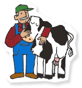
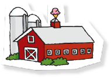
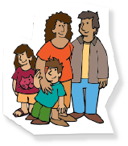
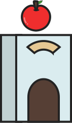

ABOUT COMPANY
-
브랜드를 운영하는 방법
-
INTRO
-
번영의 중심
“BEN&JERRYS”-
 CHAP 1
재료 소싱 및 구입 관행
-
 CHAP 2
제조 관행
-
 CHAP 3
주민 지역사회 및 환원 관행
-
-
CHAP1
-
재료 소싱 및 구입 관행
-
낙농가 돌봄
-
질 좋은 유제품을 가족 농장으로부터 공급받은
덕택에 지금의 벤 앤 제리스가 존재한다고 할 수 있습니다.낙농가 돌봄은 농부들이 농장에서 보다 지속 가능한
관행을 실천할 수 있도록 도와주는 특별한 프로그램입니다.
-
-
자연 방목 달걀
-
질미국 벤 앤 제리스가 구매하는 달걀은 인도적 방목
인증을 받은 목장에서 자란 행복한 닭들이 낳은 달걀입니다.자연 방목 인증을 받기 위해서는 암탉에게
영양분이 풍부한 먹이, 깨끗한 물, 충분한 공간 등
전문 수의사들이 만든 여러 기준을 충족해야 합니다.
-
-
브라우니
-
하프 베이크, 초콜릿 퍼지 브라우니 맛에 들어간
브라우니는 그레이스톤 베이커리에서 가져왔습니다.그레이스톤 베이커리는 고용 장벽에 가로막힌 사람들에게
일자리와 직업 훈련을 제공하기 위해 최선을 다하고 있습니다.
-
-
공정무역
-
“공정무역이란 모두에게 공정한 몫이 돌아간다는 뜻입니다.”
공정무역의 모든 개념에서 핵심이 되는 것은 바로 무엇이 옳고
그른지 판단하는 우리의 가치관과 정신이죠. 타인을 착취하여
만든 것을 사고 싶어 하는 사람은 아무도 없습니다.”-제리 그린필드, 벤 앤 제리스 공동 창업자
-
-
-
CHAP2
-
제조 관행
-
우리는 탄소 발생량을 줄이기 위해 사업 전반에
걸쳐 노력하고 있으며, 그 노력이 얼마나
성과를 내고 있는지 해마다 발표하고 있습니다. -
폐쇄형 순환 시스템을 만들기 위해 버몬트 공장에서
나온 유제품 폐기물을 받아 우리에게 신선한
유제품 원료를 공급해주는 농장으로 보냅니다.
폐기물은 메탄 소화조에 저장하고 농장에
공급할 에너지로 만들어 냅니다.
-
깨끗한 아이스크림을 만들기
위해선 냉동고도 깨끗해야 합니다.
우리의 냉동고는 한층 더 환경 친화적이고
에너지 효율성도 더 좋습니다.
-
우리의 종이 포장지는
국제산림관리협의회으로부터 인증을 받았습니다.
이 인증은 야생동물과 다양한 생물의
지속 가능성을 보호했다는 것을 의미합니다.
-
-
CHAP3
-
사람과 지역단체
-
파트너숍
-
비영리 청소년 봉사 조직이 소유하고
운영하는 벤 앤 제리스의 스쿱 매장입니다.
-
-
지역사회 활동
-
지역사회에 대한 약속은 부수적인 일이 아니며
회사의 사명처럼 우리 안에 새겨진 책무입니다.
우리는 30년이 넘는 세월 동안
지역사회 봉사, 사회 활동 및 여가 활동을 이끌었습니다.
-
-
-
사회 및 환경 문제에 대한 우리의 확고한 견해를
대중들에게 알리기 위해 문제에 대한 제기, 분명한 입장,
캠페인 전개에 대해 담대하게 목소리를 내고 있습니다.
또한 새로운 맛을 만들기 위해 노력하고 있습니다.
-
-
-
PRODUCT
최고의 품질
최고 품질의 아이스크림과 맛있는 음식을 만들고,
유통, 판매하며, 건강에 좋은 천연 재료를 사용하여
지구와 환경을 존중하는 사업 관행을
널리 알리기 위해 최선의 노력합니다! -
ECONOMIC
수익성 있는 성장
수익성 있는 성장, 이해 당사자의 이익 증대,
직원들의 자기 개발 및 직업적 성장 기회를 확대하고,
이를 토대로 하여 지속 가능한 재정적
기반을 가진 회사로 운영합니다! -
SOCIAL
혁신적인 기업
지역, 국가, 국제적으로 삶의 질을 높이는
혁신적인 방법을 제안하여,
기업이 사회의 일원으로서 해야 할
역할을 능동적으로 인식하고 있는 회사로
운영합니다!
사업 전반을 이끌어가는 진보적 가치
-
1
제품을 만들다 보면 당연히 폐기물이 발생합니다.
우리는 환경에 미치는 부정적인 영향을 최소화하기 위해 노력합니다. -
2
우리는 회사 내외의 사람들과 그들이 살고 있는 지역사회에
깊은 존경을 표하기 위해 노력합니다. -
3
우리는 비폭력적인 방법으로 평화와 정의를 이루는 것을 추구하고 지지합니다.
-
4
우리는 기회를 받지 못한 사람들에게 경제적인 기회를 만들어주고,
지속 가능하며 재현 가능한 새로운 경제 모델을 발전시키기 위해 노력합니다. -
5
우리는 가족 농장과 농촌 지역사회가 경제적으로 자립하는 데
도움이 되는 지속 가능한 안전한 먹거리를 생산 방법을 지지합니다.